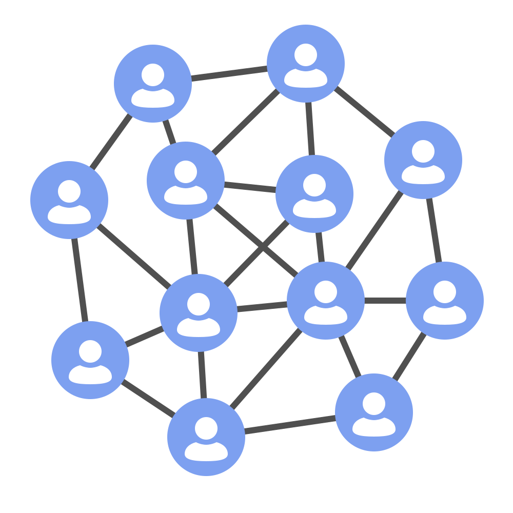
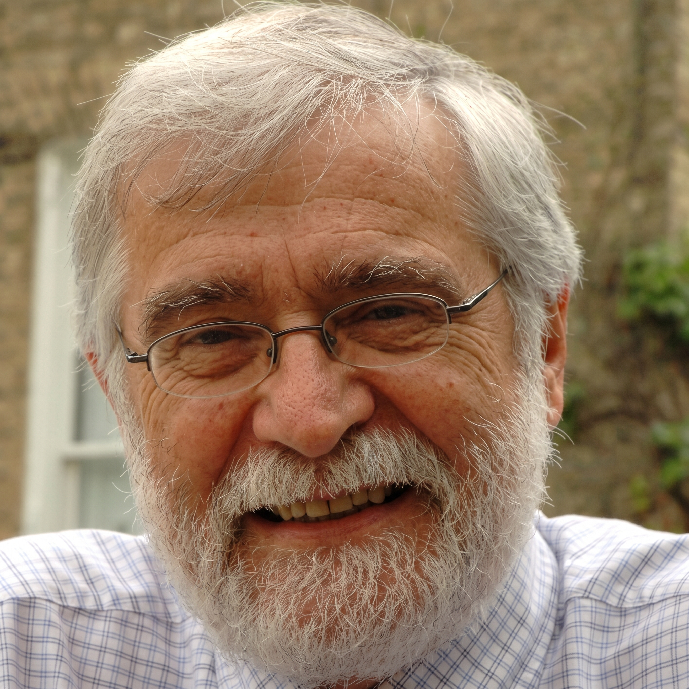
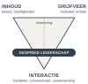
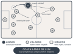

James P. Spillane is onderwijswetenschap-per aan Northwestern University in Chicago. Hij onderzocht hoe leiderschap er in scholen in de dagelijkse praktijk werkelijk uitziet. Hij ontdekte dat leiderschap niet bij één persoon ligt, maar ontstaat in de interactie tussen leiders, volgers en hun situatie (Spillane, 2005, 2006).
Daarmee verschoof de vraag van wie leidt naar hoe er geleid wordt. Leiderschap is een praktijk die over meerdere mensen gespreid is.
Tegelijkertijd werkte de Australische onderzoeker Peter Gronn het begrip uit. Hij zag gespreid leiderschap als meer dan de som van individuele leiders: een gezamenlijke activiteit als eenheid van analyse (Gronn, 2002).


Volgens Illeris heeft leren drie dimensies: inhoud (wat je leert), drijfveer (motivatie en emotie) en interactie (de wisselwerking met je omgeving) (Illeris, 2004).
Gespreid leiderschap hoort bij de interactie: Spillane ziet leiderschap als interactie tussen leiders, volgers en situatie. Leren en leiden vinden zo plaats in dezelfde sociale praktijk.
Via de professionele ruimte raakt het ook de drijfveer: wie mag meeleiden, is gemotiveerder om te leren (Kessels, 2012).
Leiderschapspraktijk. Spillane onderscheidt twee aspecten. Bij het leader-plus-aspect ligt leiderschap niet alleen bij de formele leider: ook anderen nemen leiding (Spillane, 2006).
Bij het praktijk-aspect ontstaat leiderschap in de interactie tussen leiders, volgers en situatie. Routines en hulpmiddelen in de situatie bepalen die praktijk mee (Spillane, 2005).
Het gaat dus niet om de optelsom van leiders, maar om wat zij samen doen.
Buurtzorg Nederland werd in 2006 opgericht door wijkverpleegkundige Jos de Blok, als reactie op bureaucratie en minutenregistratie in de thuiszorg. De zorg wordt geleverd door zelfsturende wijkteams van maximaal twaalf professionals (Laloux, 2015; Nandram, 2015).
Elk team regelt zelf de zorg in de eigen buurt: van intake en planning tot scholing en kwaliteit. Er zijn geen teamleiders; regiocoaches ondersteunen alleen op verzoek.
Waarom dit voorbeeld? Zonder formele leider móét leiderschap wel gespreid worden, via expertise en wisselende rollen. Zo wordt de theorie van Spillane direct zichtbaar (Spillane, 2006).
Leren. De overstap van hiërarchie naar zelfsturing vraagt meer dan nieuwe vaardigheden: iedereen moet het beeld van "wie de baas is" herzien. Dat is transformatief leren (Illeris, 2004).
Kritiek en andere visies (Bolden, 2011; Harris, 2013)
Vaag begrip: veel definities, dus lastig te meten. Macht blijft: spreiden kan ook taken afschuiven zonder zeggenschap. Weinig bewijs: het effect op resultaten is beperkt aangetoond. Hybride visie: in de praktijk werkt gespreid leiderschap náást een sterke formele leider.

Metafoor: het voetbalteam. In totaalvoetbal wordt gespreid leiderschap zichtbaar.
Wisselende spelbepalers. Wie de bal en het overzicht heeft, neemt tijdelijk de leiding (Spillane, 2006).
Positiespel. Een back stoomt alleen op als een middenvelder zijn plek overneemt: leiders en volgers maken elkaar mogelijk (Gronn, 2002).
Krijtlijnen en formatie. Regels, tactiek en gedeelde taal vormen de situatie die het samenspel structureert (Spillane & Diamond, 2007).
Coach langs de lijn. De trainer trapt zelf geen bal, maar schept ruimte en veiligheid (Kessels, 2012).
| Theorie | Voetbalteam | Buurtzorg |
|---|---|---|
| Leader-plus | Keeper, spelmaker en spits leiden ieder op hun moment. | Wie de meeste expertise heeft, bijvoorbeeld in wondzorg, neemt in die casus de leiding. |
| Praktijk | Ruimte overnemen als een teamgenoot opstoomt. | Besluiten in overleg, op basis van gelijkwaardigheid. |
| Situatie | Veld, spelregels en formatie. | Buurtzorgweb, werkafspraken en het Omaha-systeem. |
| Formele rol | De coach langs de zijlijn. | Regiocoach en een kleine backoffice. |
Gespreid leiderschap is geen taakdelegatie: formeel leiderschap blijft nodig, maar verschuift van controle naar het scheppen van ruimte (Harris, 2013).